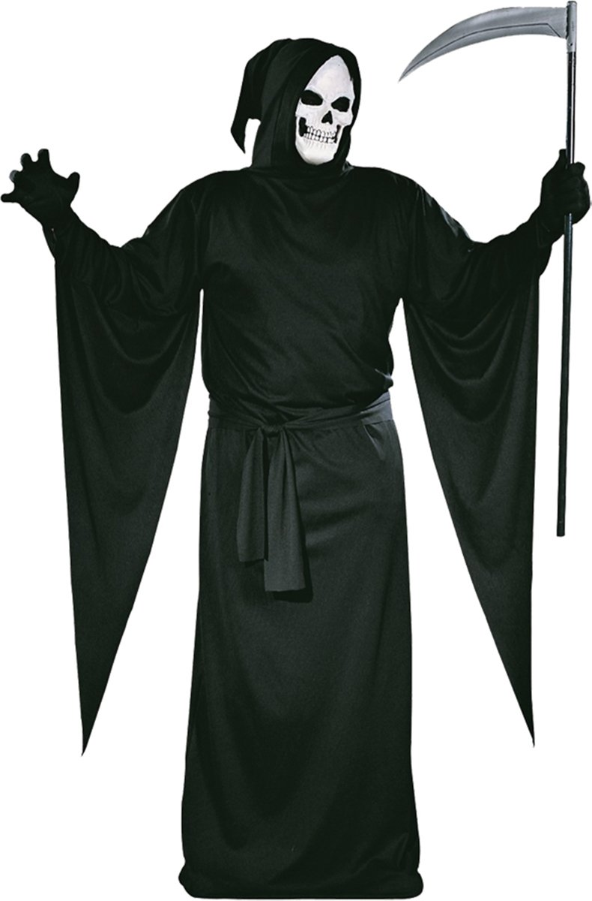
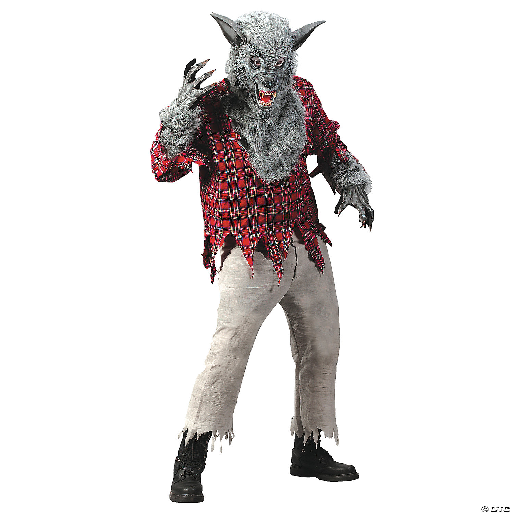
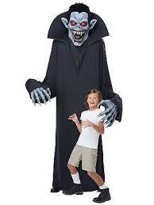
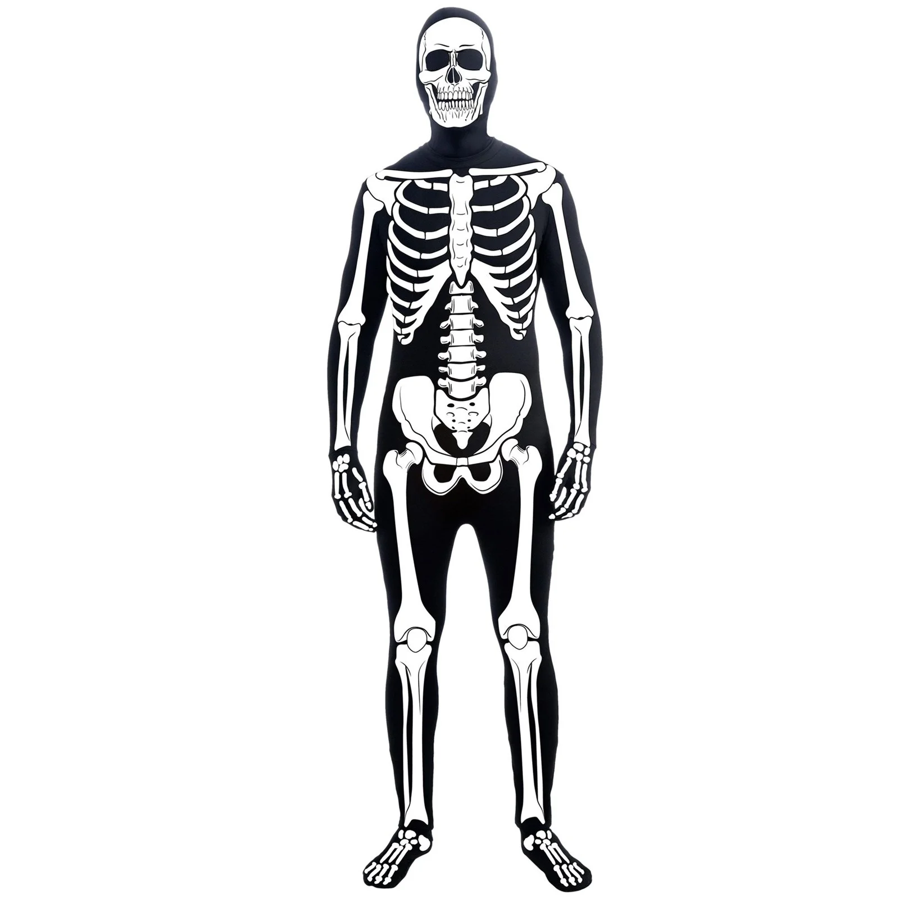
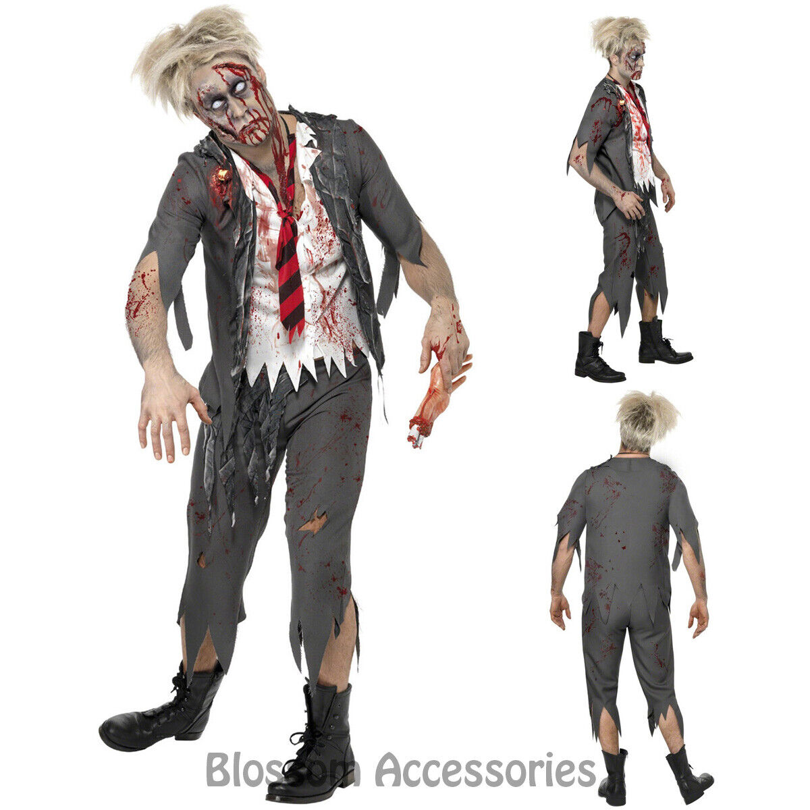
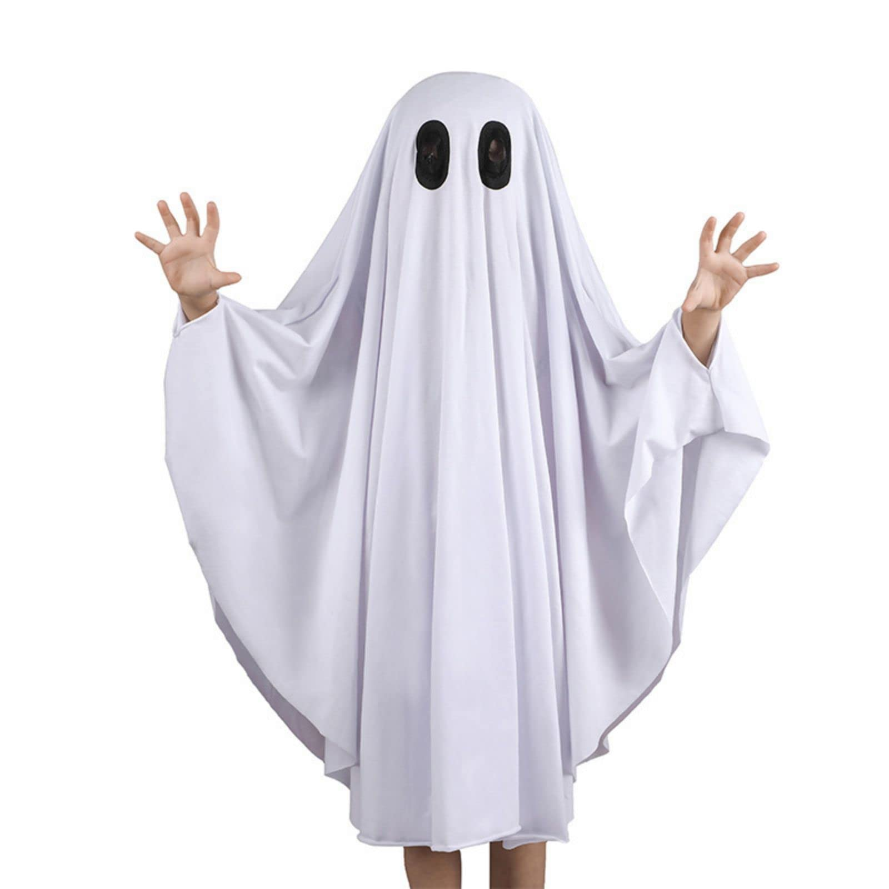

Costumes






The grim reaper costume is perfect for people who want a costume that is both creepy and simple. The werewolf costume is for people who want to buy a costume they can stay warm in because of the fur. The vampire is also creepy and less people wear it, so you will stand out. The skeleton blends in really well in the dark, so it makes you look like an actual skeleton while trick-or-treating. The zombie is really creepy and you don't have too much stuff, just face paint and using ripped clothes. The ghost is super simple, but still has a Halloween vibe.